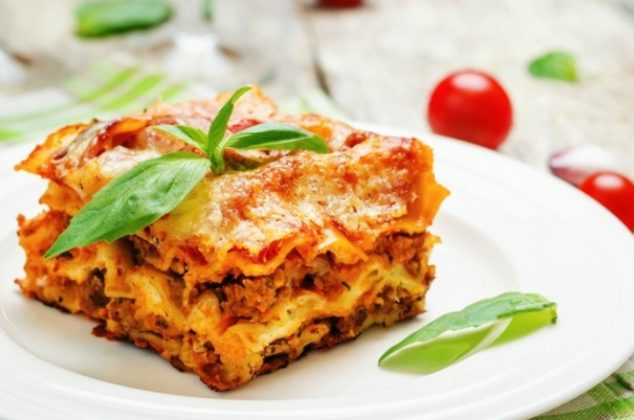

Lasagna

El origen de la lasaña se remonta al siglo I d.C. y fue Apicio, un gastrónomo romano y supuesto autor del libro de recetas en latín “De re coquianaria”, quien se refirió por primera vez a la receta de la lasaña, aunque no era exactamente tal y como la conocemos ahora.
Describió un plato formado por láminas finas de pasta, rellenas de carne y cocinadas al horno que denominó “lagana”.
No obstante, el filósofo romano Cicerón ya mencionaba su pasión por el “Lagum”, un plato muy similar a la lasaña elaborado a partir de tiras largas de pasta. En la Edad Media numerosos escritores también hicieron referencia a la lasaña en sus obras.
Sin embargo, todo parece indicar que el origen de la lasaña tal y como la conocemos en la actualidad data de 1316.
Ingredients
- 12 pzas de Pasta para lasaña
- 400 gr de carne molida
- 1 Cebolla
- 4 dientes de Ajos
- 2 Zanahorias
- 6 Tomates + 2 tzs de Puré de tomate
- 40 g Harina
- 500 mL de Leche
- 120 g de Mantequilla
- Queso Parmesano
- Laurel, tomillo, oregano
- Aceite de Oliva
- Sal y Pimienta
Procedimiento
Bolognesa
- Cortas la cebolla, ajo, zanahoria
- Escalfar, pelar y cortar los tomates
- Sofreir la cebolla y el ajo, luego anadir la zanahoria y cocinar por unos minutos
- Hacer pure con los tamates y anadirlos junto a la preparacion anterior
- Sellar la carne molida y anadirla a la salsa
- Cocinar y remover a fuego bajo por unas dos horas
Bechamel
- Preparar Roux
- Anadir la leche
- Anadir cebolla
- Agregar Sal, pimienta y nuez moscada
Construccion
- Armar la lasagna alternando capas de Bechamel, Bolognesa y pasta
- Terminar la ultima capa con pasata y rallar queso mozarella sobre ella
- Hornear por 15 a 20 min hasta que la pasta este cocida
Back